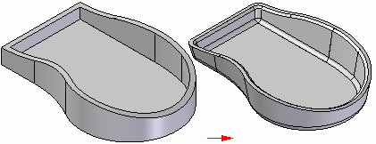

Treatment features
You construct treatment features by applying face and edge treatments, such as drafts, rounds, and chamfers to the part.

Types of treatment features
The following treatment features are available in Solid Edge:
-
A draft feature tilts an existing part face to a specified angle relative to a reference plane.
-
A round feature applies a constant or variable radius to one or more part edges or blends between two faces.
-
A chamfer feature applies a setback relative to a selected part edge.
In ordered modeling:
You can define the setback with an angle and a setback distance or with two setback values.
When to add treatment features to models
For best results, add treatment features to your model as late as possible in the design process. If a draft feature is critical for positioning other features, construct the draft just before you construct the other features.
Adding draft angles
The angle of a draft feature is measured against the normal of a draft plane or planar face. The drafted faces can be constructed by simply pivoting about the draft plane, or by pivoting about a part edge, parting line, or parting surface.